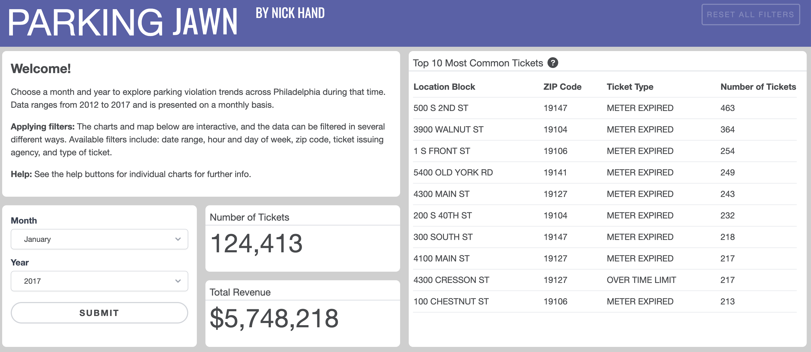
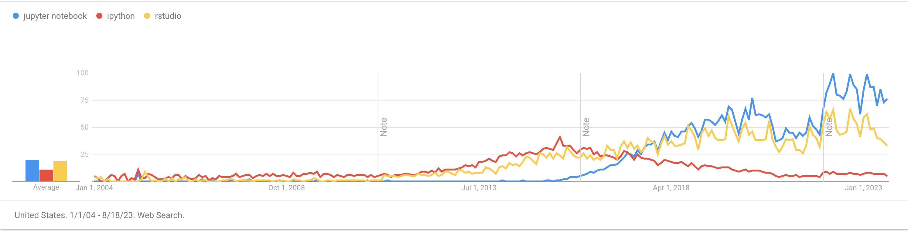
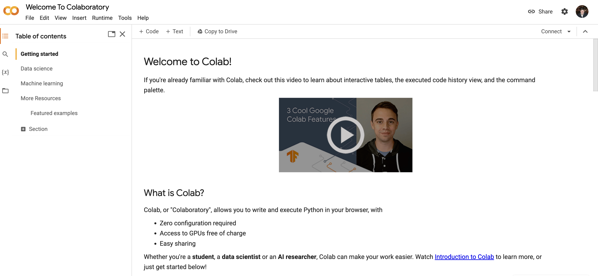
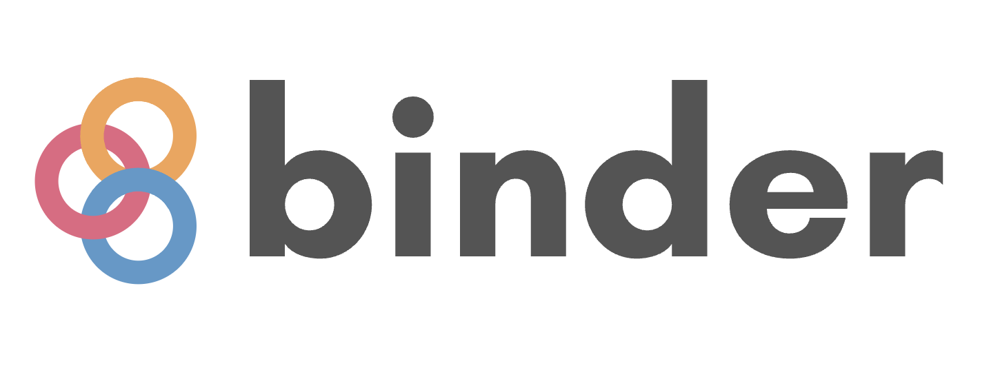
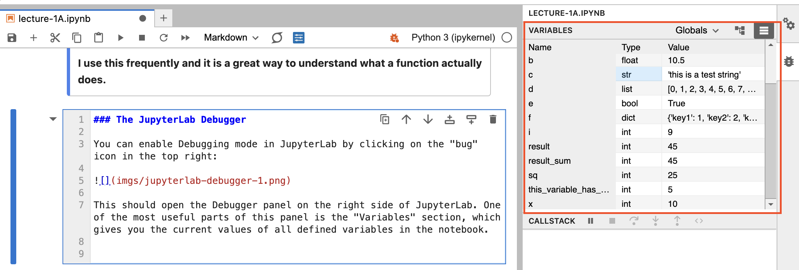
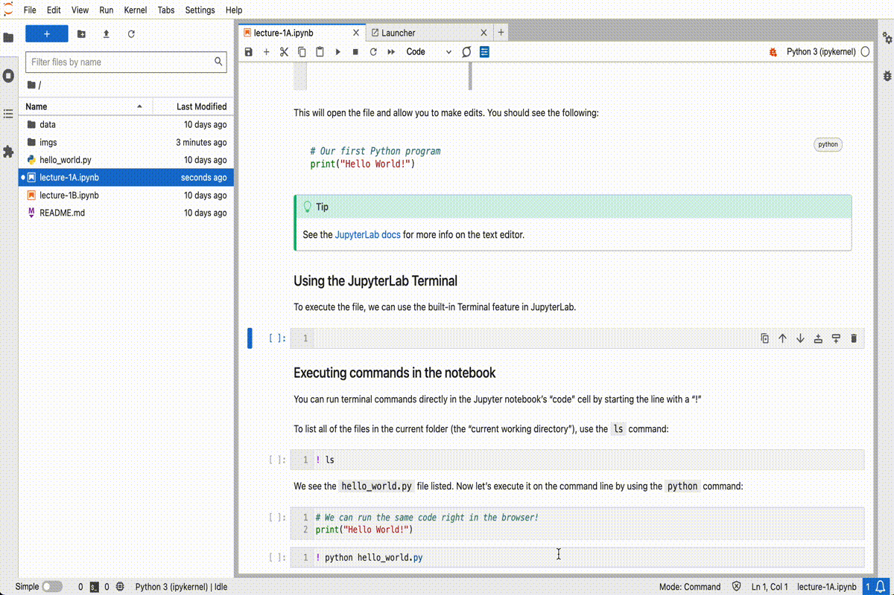

# Comments begin with a "#" character in Python
# A simple code cell
# SHIFT-ENTER to execute
x = 10
print(x)10toc: false page-layout: full
In my time at the Controller’s Office, we covered a range of policy issues in the city:

To see more of our work, check out: https://controller.phila.gov/policy-analysis


A nice example of how exploratory analysis + a well-designed dashbord can lead to insights: - The power of cross-filtering: different views of the same data across multiple dimensions - See drop in parking tickets over Jan 24-26, 2016 due to snowstorm
Parking Jawn is not Python based, but dovetails nicely with one of the main goals of the course: > How can we effectively explore and extract insight from complex datasets?
Course has four websites (sorry!). They are:
Each will have its own purpose:
Exploratory Data Science: Students will be introduced to the main tools needed to get started analyzing and visualizing data using Python
Introduction to Geospatial Data Science: Building on the previous set of tools, this module will teach students how to work with geospatial datasets using a range of modern Python toolkits.
Data Ingestion & Big Data: Students will learn how to collect new data through web scraping and APIs, as well as how to work effectively with the large datasets often encountered in real-world applications.
From Exploration to Storytelling: With a solid foundation, students will learn the latest tools to present their analysis results using web-based formats to transform their insights into interactive stories.
Geospatial Data Science in the Wild: Armed with the necessary data science tools, the final module introduces a range of advanced analytic and machine learning techniques using a number of innovative examples from modern researchers.
Note: Homeworks will be assigned (roughly) every two and a half weeks.
Check out the schedule page for the most up-to-date details on lectures, assignment due dates, etc.
The final project is to replicate the pipeline approach on a dataset (or datasets) of your choosing.
Students will be required to use several of the analysis techniques taught in the class and produce a web-based data visualization that effectively communicates the empirical results to a non-technical audience.
More info will be posted here: https://github.com/MUSA-550-Fall-2023/final-project
Roll call: https://bit.ly/musa550-roll-call
Some initial feedback: https://bit.ly/musa550-initial-feedback
Example #1: A 2017 analysis of StackOverflow posts

Very versatile: good for both exploratory data analysis and polished finished products
The lecture slides in the course will all be Jupyter notebooks. The preferred interface for editing and executing them will be JupyterLab. That’s what I’m using now!
For more info on Jupyter notebooks and JupyterLab, check out the guide on the course website.
In particulary, I strongly encourage you to go through the official documentation for JupyterLab and Jupyter notebooks:
Google Colab is the most popular alternative to Jupyter notebooks.

See, for example: https://colab.research.google.com/notebooks/welcome.ipynb

Weekly lectures are available on Binder! In the README for each week’s repository on GitHub, you will see badges to launch the lecture slides on Binder.
You can also access these links from the content section of the course website. For example, here is:
https://musa-550-fall-2023.github.io/content/week-1/
Check out the content overview page on the main course website for more info!
Jupyter notebooks are a mix of code cells and text cells in Markdown. You can change the type of cell in the top menu bar.
This cell is a Markdown cell.
# Comments begin with a "#" character in Python
# A simple code cell
# SHIFT-ENTER to execute
x = 10
print(x)10# integer
a = 10
# float
b = 10.5
# string
c = "this is a test string"
# lists
d = list(range(0, 10))
# booleans
e = True
# dictionaries
f = {"key1": 1, "key2": 2}print(a)
print(b)
print(c)
print(d)
print(e)
print(f)10
10.5
this is a test string
[0, 1, 2, 3, 4, 5, 6, 7, 8, 9]
True
{'key1': 1, 'key2': 2}Unlike R, you’ll need to use quotes more often in Python, particularly around strings and keys of dictionaries.
We can use the dict() function, which is built in to the Python language. More on functions in a bit…
f = dict(key1=1, key2=2, key3=3)
f{'key1': 1, 'key2': 2, 'key3': 3}# Access the value with key 'key1'
f['key1']1d[0, 1, 2, 3, 4, 5, 6, 7, 8, 9]# Access the second list entry (0 is the first index)
d[1] 1c'this is a test string'# the first character
c[0]'t'Be sure to use the right indentation in for loops!
# Variable that will track the sum
result_sum = 0
# Variable i takes on values [0, 1, 2, 3, 4, 5, 6, 7, 8, 9]
for i in range(10):
# Indented, so it runs for each iteration of the loop
print(i)
result_sum = result_sum + i0
1
2
3
4
5
6
7
8
9print(result_sum)45a = range(10) # this is an iteratorprint(a)range(0, 10)Use the list() function to iterate over it and make it into a list:
# convert it to a list explicitly
a = list(range(10))
# Output it from the cell
a[0, 1, 2, 3, 4, 5, 6, 7, 8, 9]# or use the INLINE syntax; this is the SAME
a = [i for i in range(10)]
a[0, 1, 2, 3, 4, 5, 6, 7, 8, 9]def function_name(arg1, arg2, arg3):
.
.
.
code lines (indented)
.
.
.
return resultdef compute_square(x):
return x * xsq = compute_square(5)
print(sq)25def compute_product(x, y=5):
return x * y# use the default value for y
print(compute_product(5))25# specify a y value other than the default
print(compute_product(5, 10))50# can also explicitly tell Python which arguments are which
print(compute_product(5, y=2))
print(compute_product(y=2, x=5))10
10print(compute_product(x=5, y=4))20# argument names must match the function signature though!
print(compute_product(x=5, z=5))TypeError: compute_product() got an unexpected keyword argument 'z'Use tab auto-completion and the ? and ?? operators
this_variable_has_a_long_name = 5# try hitting tab after typing this_
this_variable_has_a_long_name5# Forget how to create a range? --> use the help message
range?Init signature: range(self, /, *args, **kwargs) Docstring: range(stop) -> range object range(start, stop[, step]) -> range object Return an object that produces a sequence of integers from start (inclusive) to stop (exclusive) by step. range(i, j) produces i, i+1, i+2, ..., j-1. start defaults to 0, and stop is omitted! range(4) produces 0, 1, 2, 3. These are exactly the valid indices for a list of 4 elements. When step is given, it specifies the increment (or decrement). Type: type Subclasses:
Use the ?? operator
# Lets re-define compute_product() and add a docstring between """ """
def compute_product(x, y=5):
"""
This computes the product of x and y
This is all part of the comment.
"""
return x * ycompute_product??Signature: compute_product(x, y=5) Source: def compute_product(x, y=5): """ This computes the product of x and y This is all part of the comment. """ return x * y File: /var/folders/49/ntrr94q12xd4rq8hqdnx96gm0000gn/T/ipykernel_63388/3896936014.py Type: function
The question mark operator gives you access to the help message for any variable or function.
I use this frequently and it is a great way to understand what a function actually does.
You can enable Debugging mode in JupyterLab by clicking on the “bug” icon in the top right:

This should open the Debugger panel on the right side of JupyterLab. One of the most useful parts of this panel is the “Variables” section, which gives you the current values of all defined variables in the notebook.

For more information on the debugger, see the JupyterLab docs.
This was a very brief introduction to Python and Python syntax. We’ll continue practicing and reinforcing the proper syntax throughout the next few weeks, but it can definitely be frustrating. Hang in there!
DataCamp is providing 6 months of complimentary access to its courses for students in MUSA 550. Whether you have experience with Python or not, this is a great opportunity to learn the basics of Python and practice your skills.
It is strongly recommended that you watch some or all of the introductory videos below to build a stronger Python foundation for the semester. The more advanced, intermediate courses are also great — the more the merrier!
For more info, including how to sign up, check out the resources section of the website.
Additional Python resources are listed on our course website under “Resources”
https://musa-550-fall-2023.github.io/resource/python/
In addition to the DataCamp videos, there are links to lots of online tutorials:
In this class, we will almost exclusively work inside Jupyter notebooks — you’ll be writing Python code and doing data analysis directly in the notebook.
The more traditional method of using Python is to put your code into a .py file and execute it via the command line (known as the Miniforge/Anaconda Prompt on Windows or Terminal app on MacOS).
See this section of the Practical Python Programming tutorial for more info.
There is a file called hello_world.py in the repository for week 1. If we execute it, it should print out “Hello, World” to the command line.
First, let’s open up the .py file in the JupyterLab text editor. Double click on the “hello_world.py” item in the file browser on the left:

This will open the file and allow you to make edits. You should see the following:
# Our first Python program
print("Hello World!")See the JupyterLab docs for more info on the text editor.
To execute the file, we can use the built-in Terminal feature in JupyterLab using the following steps:
python hello_world.pyAnd you should see the following output:
Hello World!It should look something like this:

The JupyterLab text editor will work in a pinch, but it’s not usually the best option when writing software outside the notebook. Other code editors will provide a nice interface for writing Python code and some even have fancy features, like real-time syntax checking and syntax highlighting.
My recommended option is Visual Studio Code.